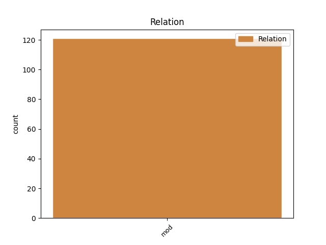
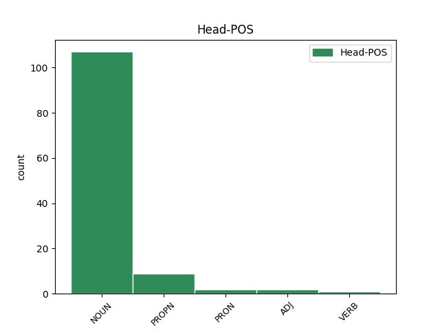
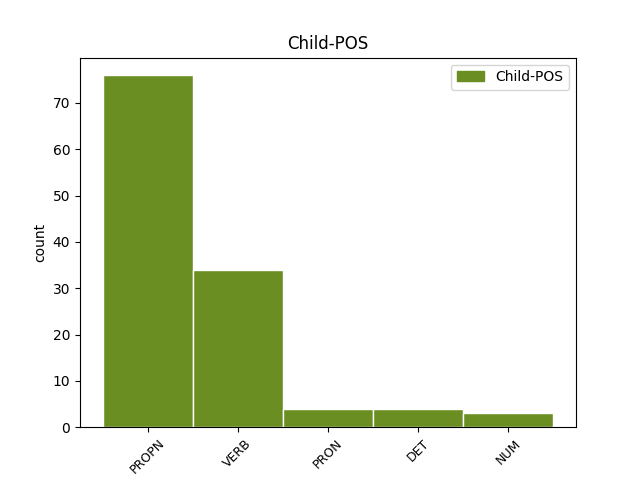

Distribution of features within this leaf



Agreement Rules sorted by frequency.
- When the dependent token is the modifer(mod) of the head token, and the dependent token is PROPN.
1 Ён _ _ _ _ 0 _ _ _
2 плыў _ _ _ _ 0 _ _ _
3 па _ _ _ _ 0 _ _ _
4 Мускуснай Мускусная PROPN JJL Case=Loc|Degree=Pos|Gender=Fem|Number=Sing 5 mod _ _
5 затоцы затока NOUN NN Animacy=Inan|Case=Loc|Gender=Fem|Number=Sing 0 _ _ _
6 , _ _ _ _ 0 _ _ _
7 якая _ _ _ _ 0 _ _ _
8 вяла _ _ _ _ 0 _ _ _
9 яго _ _ _ _ 0 _ _ _
10 да _ _ _ _ 0 _ _ _
11 галоўнага _ _ _ _ 0 _ _ _
12 возера _ _ _ _ 0 _ _ _
13 і _ _ _ _ 0 _ _ _
14 галоўнай _ _ _ _ 0 _ _ _
15 з _ _ _ _ 0 _ _ _
16 яго _ _ _ _ 0 _ _ _
17 хацін _ _ _ _ 0 _ _ _
18 і _ _ _ _ 0 _ _ _
19 была _ _ _ _ 0 _ _ _
20 адным _ _ _ _ 0 _ _ _
21 з _ _ _ _ 0 _ _ _
22 асноўных _ _ _ _ 0 _ _ _
23 участкаў _ _ _ _ 0 _ _ _
24 яго _ _ _ _ 0 _ _ _
25 палявання _ _ _ _ 0 _ _ _
26 . _ _ _ _ 0 _ _ _
1 На _ _ _ _ 0 _ _ _
2 шэра-карычневай _ _ _ _ 0 _ _ _
3 паверхні _ _ _ _ 0 _ _ _
4 вады _ _ _ _ 0 _ _ _
5 скрозь _ _ _ _ 0 _ _ _
6 вытыркаліся _ _ _ _ 0 _ _ _
7 травяністыя _ _ _ _ 0 _ _ _
8 , _ _ _ _ 0 _ _ _
9 злепленыя зляпіць VERB NNP Animacy=Inan|Case=Nom|Gender=Masc|Number=Plur|VerbForm=Part 14 mod _ _
10 з _ _ _ _ 0 _ _ _
11 гразі _ _ _ _ 0 _ _ _
12 і _ _ _ _ 0 _ _ _
13 галінак _ _ _ _ 0 _ _ _
14 астраўкі астравок NOUN NN Animacy=Inan|Case=Nom|Gender=Masc|Number=Plur 0 _ _ _
15 . _ _ _ _ 0 _ _ _
1 З _ _ _ _ 0 _ _ _
2 улікам улік NOUN _ Animacy=Inan|Case=Ins|Gender=Masc|Number=Sing 0 _ _ _
3 таго тое PRON _ Animacy=Inan|Case=Gen|Gender=Neut|Number=Sing 2 mod _ SpaceAfter=No
4 , _ _ _ _ 0 _ _ _
5 што _ _ _ _ 0 _ _ _
6 на _ _ _ _ 0 _ _ _
7 асноўным _ _ _ _ 0 _ _ _
8 рынку _ _ _ _ 0 _ _ _
9 збыту _ _ _ _ 0 _ _ _
10 — _ _ _ _ 0 _ _ _
11 у _ _ _ _ 0 _ _ _
12 Расіі _ _ _ _ 0 _ _ _
13 — _ _ _ _ 0 _ _ _
14 яе _ _ _ _ 0 _ _ _
15 высадзілі _ _ _ _ 0 _ _ _
16 больш _ _ _ _ 0 _ _ _
17 , _ _ _ _ 0 _ _ _
18 чым _ _ _ _ 0 _ _ _
19 звычайна _ _ _ _ 0 _ _ _
20 , _ _ _ _ 0 _ _ _
21 кошты _ _ _ _ 0 _ _ _
22 на _ _ _ _ 0 _ _ _
23 беларускі _ _ _ _ 0 _ _ _
24 прадукт _ _ _ _ 0 _ _ _
25 пачалі _ _ _ _ 0 _ _ _
26 падаць _ _ _ _ 0 _ _ _
27 . _ _ _ _ 0 _ _ _
1 Але _ _ _ _ 0 _ _ _
2 і _ _ _ _ 0 _ _ _
3 гэта _ _ _ _ 0 _ _ _
4 не _ _ _ _ 0 _ _ _
5 стрымлівала _ _ _ _ 0 _ _ _
6 яго яго DET PRP Case=Gen|Gender=Masc|Number=Sing|Person=3 7 mod _ _
7 дапытлівасці дапытлівасць NOUN NN Animacy=Inan|Case=Gen|Gender=Fem|Number=Sing 0 _ _ _
8 . _ _ _ _ 0 _ _ _
1 I _ _ _ _ 0 _ _ _
2 была _ _ _ _ 0 _ _ _
3 яшчэ _ _ _ _ 0 _ _ _
4 адна адна NUM PRED Case=Nom|Gender=Fem|Number=Sing 12 mod _ SpaceAfter=No
5 , _ _ _ _ 0 _ _ _
6 апошняя _ _ _ _ 0 _ _ _
7 , _ _ _ _ 0 _ _ _
8 у _ _ _ _ 0 _ _ _
9 гонар _ _ _ _ 0 _ _ _
10 Більба _ _ _ _ 0 _ _ _
11 , _ _ _ _ 0 _ _ _
12 неспадзяванка неспадзяванка NOUN NNP Animacy=Inan|Case=Nom|Gender=Fem|Number=Sing 0 _ _ _
13 , _ _ _ _ 0 _ _ _
14 якая _ _ _ _ 0 _ _ _
15 ( _ _ _ _ 0 _ _ _
16 на _ _ _ _ 0 _ _ _
17 што _ _ _ _ 0 _ _ _
18 Гэндальф _ _ _ _ 0 _ _ _
19 і _ _ _ _ 0 _ _ _
20 спадзяваўся _ _ _ _ 0 _ _ _
21 ) _ _ _ _ 0 _ _ _
22 страшэнна _ _ _ _ 0 _ _ _
23 напалохала _ _ _ _ 0 _ _ _
24 хобітаў _ _ _ _ 0 _ _ _
25 . _ _ _ _ 0 _ _ _
Disagree Examples:
1 Як _ _ _ _ 0 _ _ _
2 распавялі _ _ _ _ 0 _ _ _
3 ў _ _ _ _ 0 _ _ _
4 міністэрстве _ _ _ _ 0 _ _ _
5 эканомікі _ _ _ _ 0 _ _ _
6 , _ _ _ _ 0 _ _ _
7 у _ _ _ _ 0 _ _ _
8 рамках _ _ _ _ 0 _ _ _
9 цяперашняга _ _ _ _ 0 _ _ _
10 візіту _ _ _ _ 0 _ _ _
11 ў _ _ _ _ 0 _ _ _
12 Сеул _ _ _ _ 0 _ _ _
13 дырэктар _ _ _ _ 0 _ _ _
14 Нацыянальнага _ _ _ _ 0 _ _ _
15 агенцтва _ _ _ _ 0 _ _ _
16 інвестыцый _ _ _ _ 0 _ _ _
17 і _ _ _ _ 0 _ _ _
18 прыватызацыі _ _ _ _ 0 _ _ _
19 Дзмітры _ _ _ _ 0 _ _ _
20 Клеўжыц _ _ _ _ 0 _ _ _
21 прэзентаваў _ _ _ _ 0 _ _ _
22 інвестыцыйныя _ _ _ _ 0 _ _ _
23 магчымасці магчымасць NOUN NN Animacy=Inan|Case=Acc|Gender=Fem|Number=Plur 0 _ _ _
24 Беларусі Беларусь PROPN NNP Animacy=Inan|Case=Gen|Gender=Fem|Number=Sing 23 mod _ _
25 і _ _ _ _ 0 _ _ _
26 правёў _ _ _ _ 0 _ _ _
27 перамовы _ _ _ _ 0 _ _ _
28 з _ _ _ _ 0 _ _ _
29 намеснікам _ _ _ _ 0 _ _ _
30 міністра _ _ _ _ 0 _ _ _
31 інтэлектуальнай _ _ _ _ 0 _ _ _
32 эканомікі _ _ _ _ 0 _ _ _
33 Рэспублікі _ _ _ _ 0 _ _ _
34 Карэя _ _ _ _ 0 _ _ _
35 Мун _ _ _ _ 0 _ _ _
36 Чжэ _ _ _ _ 0 _ _ _
37 До _ _ _ _ 0 _ _ _
38 , _ _ _ _ 0 _ _ _
39 віцэ-прэзідэнтам _ _ _ _ 0 _ _ _
40 Карэйскага _ _ _ _ 0 _ _ _
41 агенцтва _ _ _ _ 0 _ _ _
42 па _ _ _ _ 0 _ _ _
43 прасоўванні _ _ _ _ 0 _ _ _
44 гандлю _ _ _ _ 0 _ _ _
45 і _ _ _ _ 0 _ _ _
46 інвестыцый _ _ _ _ 0 _ _ _
47 ( _ _ _ _ 0 _ _ _
48 KOTRA _ _ _ _ 0 _ _ _
49 ) _ _ _ _ 0 _ _ _
50 О _ _ _ _ 0 _ _ _
51 Сон _ _ _ _ 0 _ _ _
52 Гынам _ _ _ _ 0 _ _ _
53 і _ _ _ _ 0 _ _ _
54 радам _ _ _ _ 0 _ _ _
55 мясцовых _ _ _ _ 0 _ _ _
56 бізнэсоўцаў _ _ _ _ 0 _ _ _
57 . _ _ _ _ 0 _ _ _
1 Як _ _ _ _ 0 _ _ _
2 адзначыў _ _ _ _ 0 _ _ _
3 прадстаўнік _ _ _ _ 0 _ _ _
4 УУС _ _ _ _ 0 _ _ _
5 Гомельскага _ _ _ _ 0 _ _ _
6 аблвыканкама _ _ _ _ 0 _ _ _
7 Анатоль _ _ _ _ 0 _ _ _
8 Васільеў _ _ _ _ 0 _ _ _
9 , _ _ _ _ 0 _ _ _
10 аналіз _ _ _ _ 0 _ _ _
11 няшчасных _ _ _ _ 0 _ _ _
12 выпадкаў _ _ _ _ 0 _ _ _
13 у _ _ _ _ 0 _ _ _
14 рэк _ _ _ _ 0 _ _ _
15 і _ _ _ _ 0 _ _ _
16 вадаёмаў _ _ _ _ 0 _ _ _
17 , _ _ _ _ 0 _ _ _
18 якія _ _ _ _ 0 _ _ _
19 адбыліся _ _ _ _ 0 _ _ _
20 ў _ _ _ _ 0 _ _ _
21 гэтым _ _ _ _ 0 _ _ _
22 годзе _ _ _ _ 0 _ _ _
23 , _ _ _ _ 0 _ _ _
24 паказаў _ _ _ _ 0 _ _ _
25 , _ _ _ _ 0 _ _ _
26 што _ _ _ _ 0 _ _ _
27 большасць большасць NOUN NN Animacy=Inan|Case=Nom|Gender=Fem|Number=Sing 0 _ _ _
28 патанулых патануць VERB VBNL Aspect=Perf|Case=Gen|Number=Plur|Tense=Past|VerbForm=Part|Voice=Act 27 mod _ _
29 былі _ _ _ _ 0 _ _ _
30 ў _ _ _ _ 0 _ _ _
31 стане _ _ _ _ 0 _ _ _
32 алкагольнага _ _ _ _ 0 _ _ _
33 ап'янення _ _ _ _ 0 _ _ _
34 . _ _ _ _ 0 _ _ _
1 З’явілася _ _ _ _ 0 _ _ _
2 група _ _ _ _ 0 _ _ _
3 інтэлектуалаў інтэлектуал NOUN NN Animacy=Anim|Case=Gen|Gender=Masc|Number=Plur 0 _ _ _
4 , _ _ _ _ 0 _ _ _
5 чыя _ _ _ _ 0 _ _ _
6 дзейнасць _ _ _ _ 0 _ _ _
7 распаліла распаліць VERB VBC Aspect=Perf|Gender=Fem|Mood=Ind|Number=Sing|Tense=Past|VerbForm=Fin|Voice=Act 3 mod _ _
8 пажар _ _ _ _ 0 _ _ _
9 нацыянальнага _ _ _ _ 0 _ _ _
10 адраджэння _ _ _ _ 0 _ _ _
11 . _ _ _ _ 0 _ _ _
1 План _ _ _ _ 0 _ _ _
2 мерапрыемстваў _ _ _ _ 0 _ _ _
3 па _ _ _ _ 0 _ _ _
4 рэалізацыі _ _ _ _ 0 _ _ _
5 Канцэпцыі _ _ _ _ 0 _ _ _
6 кіравання _ _ _ _ 0 _ _ _
7 валавым _ _ _ _ 0 _ _ _
8 знешнім _ _ _ _ 0 _ _ _
9 доўгам _ _ _ _ 0 _ _ _
10 Беларусі _ _ _ _ 0 _ _ _
11 таксама _ _ _ _ 0 _ _ _
12 прадугледжвае _ _ _ _ 0 _ _ _
13 складанне _ _ _ _ 0 _ _ _
14 справаздачы _ _ _ _ 0 _ _ _
15 аб _ _ _ _ 0 _ _ _
16 ВВД _ _ _ _ 0 _ _ _
17 і _ _ _ _ 0 _ _ _
18 падрыхтоўку _ _ _ _ 0 _ _ _
19 прагнозу _ _ _ _ 0 _ _ _
20 аб _ _ _ _ 0 _ _ _
21 маючых _ _ _ _ 0 _ _ _
22 адбыцца _ _ _ _ 0 _ _ _
23 плацяжах _ _ _ _ 0 _ _ _
24 па _ _ _ _ 0 _ _ _
25 пагашэнні _ _ _ _ 0 _ _ _
26 і _ _ _ _ 0 _ _ _
27 абслугоўванні _ _ _ _ 0 _ _ _
28 знешняга _ _ _ _ 0 _ _ _
29 доўгу _ _ _ _ 0 _ _ _
30 ў _ _ _ _ 0 _ _ _
31 разрэзе _ _ _ _ 0 _ _ _
32 сектараў _ _ _ _ 0 _ _ _
33 эканомікі _ _ _ _ 0 _ _ _
34 ; _ _ _ _ 0 _ _ _
35 падрыхтоўку _ _ _ _ 0 _ _ _
36 і _ _ _ _ 0 _ _ _
37 накіраванне _ _ _ _ 0 _ _ _
38 ў _ _ _ _ 0 _ _ _
39 Саўмін _ _ _ _ 0 _ _ _
40 і _ _ _ _ 0 _ _ _
41 Нацбанк _ _ _ _ 0 _ _ _
42 Беларусі _ _ _ _ 0 _ _ _
43 аналітычнай _ _ _ _ 0 _ _ _
44 запіскі _ _ _ _ 0 _ _ _
45 аб _ _ _ _ 0 _ _ _
46 стане _ _ _ _ 0 _ _ _
47 ВВД _ _ _ _ 0 _ _ _
48 з _ _ _ _ 0 _ _ _
49 ацэнкай _ _ _ _ 0 _ _ _
50 паказчыкаў _ _ _ _ 0 _ _ _
51 эканамічнай _ _ _ _ 0 _ _ _
52 бяспекі _ _ _ _ 0 _ _ _
53 па _ _ _ _ 0 _ _ _
54 пытаннях пытанне NOUN NN Animacy=Inan|Case=Loc|Gender=Neut|Number=Plur 0 _ _ _
55 ВВД ВВД PROPN NNP Animacy=Inan|Case=Gen|Gender=Masc|Number=Sing 54 mod _ _
56 краіны _ _ _ _ 0 _ _ _
57 ; _ _ _ _ 0 _ _ _
58 інфармаванне _ _ _ _ 0 _ _ _
59 замежных _ _ _ _ 0 _ _ _
60 інвестараў _ _ _ _ 0 _ _ _
61 аб _ _ _ _ 0 _ _ _
62 макраэканамічнай _ _ _ _ 0 _ _ _
63 сітуацыі _ _ _ _ 0 _ _ _
64 ў _ _ _ _ 0 _ _ _
65 Беларусі _ _ _ _ 0 _ _ _
66 , _ _ _ _ 0 _ _ _
67 у _ _ _ _ 0 _ _ _
68 тым _ _ _ _ 0 _ _ _
69 ліку _ _ _ _ 0 _ _ _
70 інфармацыю _ _ _ _ 0 _ _ _
71 аб _ _ _ _ 0 _ _ _
72 стане _ _ _ _ 0 _ _ _
73 ВВД _ _ _ _ 0 _ _ _
74 ; _ _ _ _ 0 _ _ _
75 павышэнне _ _ _ _ 0 _ _ _
76 інфармаванасці _ _ _ _ 0 _ _ _
77 кіраўнікоў _ _ _ _ 0 _ _ _
78 прадпрыемстваў _ _ _ _ 0 _ _ _
79 рэальнага _ _ _ _ 0 _ _ _
80 сектара _ _ _ _ 0 _ _ _
81 аб _ _ _ _ 0 _ _ _
82 эфектыўных _ _ _ _ 0 _ _ _
83 стратэгіях _ _ _ _ 0 _ _ _
84 кіравання _ _ _ _ 0 _ _ _
85 знешнім _ _ _ _ 0 _ _ _
86 доўгам _ _ _ _ 0 _ _ _
87 , _ _ _ _ 0 _ _ _
88 магчымых _ _ _ _ 0 _ _ _
89 інструментах _ _ _ _ 0 _ _ _
90 мінімізацыі _ _ _ _ 0 _ _ _
91 рызык _ _ _ _ 0 _ _ _
92 знешніх _ _ _ _ 0 _ _ _
93 пазык _ _ _ _ 0 _ _ _
94 . _ _ _ _ 0 _ _ _
1 Акрамя _ _ _ _ 0 _ _ _
2 таго _ _ _ _ 0 _ _ _
3 , _ _ _ _ 0 _ _ _
4 план _ _ _ _ 0 _ _ _
5 уключае _ _ _ _ 0 _ _ _
6 разгляд _ _ _ _ 0 _ _ _
7 у _ _ _ _ 0 _ _ _
8 бягучым _ _ _ _ 0 _ _ _
9 годзе _ _ _ _ 0 _ _ _
10 магчымасці _ _ _ _ 0 _ _ _
11 вылучэння _ _ _ _ 0 _ _ _
12 ў _ _ _ _ 0 _ _ _
13 сістэме _ _ _ _ 0 _ _ _
14 аналізу _ _ _ _ 0 _ _ _
15 знешніх _ _ _ _ 0 _ _ _
16 абавязацельстваў _ _ _ _ 0 _ _ _
17 арганізацый _ _ _ _ 0 _ _ _
18 з _ _ _ _ 0 _ _ _
19 пераважнай _ _ _ _ 0 _ _ _
20 доляй _ _ _ _ 0 _ _ _
21 дзяржуласнасці _ _ _ _ 0 _ _ _
22 , _ _ _ _ 0 _ _ _
23 распрацоўку _ _ _ _ 0 _ _ _
24 ў _ _ _ _ 0 _ _ _
25 2012 _ _ _ _ 0 _ _ _
26 - _ _ _ _ 0 _ _ _
27 2013 _ _ _ _ 0 _ _ _
28 гадах _ _ _ _ 0 _ _ _
29 прапаноў _ _ _ _ 0 _ _ _
30 аб _ _ _ _ 0 _ _ _
31 формах _ _ _ _ 0 _ _ _
32 статыстычнай _ _ _ _ 0 _ _ _
33 справаздачнасці _ _ _ _ 0 _ _ _
34 па _ _ _ _ 0 _ _ _
35 ўліку _ _ _ _ 0 _ _ _
36 ВВД _ _ _ _ 0 _ _ _
37 ў _ _ _ _ 0 _ _ _
38 частцы _ _ _ _ 0 _ _ _
39 іншых _ _ _ _ 0 _ _ _
40 сектараў _ _ _ _ 0 _ _ _
41 для _ _ _ _ 0 _ _ _
42 павышэння _ _ _ _ 0 _ _ _
43 якасці _ _ _ _ 0 _ _ _
44 аналізу _ _ _ _ 0 _ _ _
45 ВВД _ _ _ _ 0 _ _ _
46 Беларусі _ _ _ _ 0 _ _ _
47 і _ _ _ _ 0 _ _ _
48 кіравання _ _ _ _ 0 _ _ _
49 ім _ _ _ _ 0 _ _ _
50 , _ _ _ _ 0 _ _ _
51 ўдасканаленне _ _ _ _ 0 _ _ _
52 ў _ _ _ _ 0 _ _ _
53 2011 _ _ _ _ 0 _ _ _
54 - _ _ _ _ 0 _ _ _
55 2012 _ _ _ _ 0 _ _ _
56 гадах _ _ _ _ 0 _ _ _
57 сістэмы _ _ _ _ 0 _ _ _
58 індыкатараў _ _ _ _ 0 _ _ _
59 паказчыкаў паказчык NOUN NN Animacy=Inan|Case=Gen|Gender=Masc|Number=Plur 0 _ _ _
60 ВВД ВВД PROPN NNP Animacy=Inan|Case=Gen|Gender=Masc|Number=Sing 59 mod _ _
61 з _ _ _ _ 0 _ _ _
62 улікам _ _ _ _ 0 _ _ _
63 нацыянальных _ _ _ _ 0 _ _ _
64 асаблівасцяў _ _ _ _ 0 _ _ _
65 , _ _ _ _ 0 _ _ _
66 распрацоўку _ _ _ _ 0 _ _ _
67 дыферэнцыраваных _ _ _ _ 0 _ _ _
68 узроўняў _ _ _ _ 0 _ _ _
69 іх _ _ _ _ 0 _ _ _
70 крытычнасці _ _ _ _ 0 _ _ _
71 з _ _ _ _ 0 _ _ _
72 улікам _ _ _ _ 0 _ _ _
73 палітыкі _ _ _ _ 0 _ _ _
74 сацыяльна-эканамічнага _ _ _ _ 0 _ _ _
75 развіцця _ _ _ _ 0 _ _ _
76 краіны _ _ _ _ 0 _ _ _
77 . _ _ _ _ 0 _ _ _